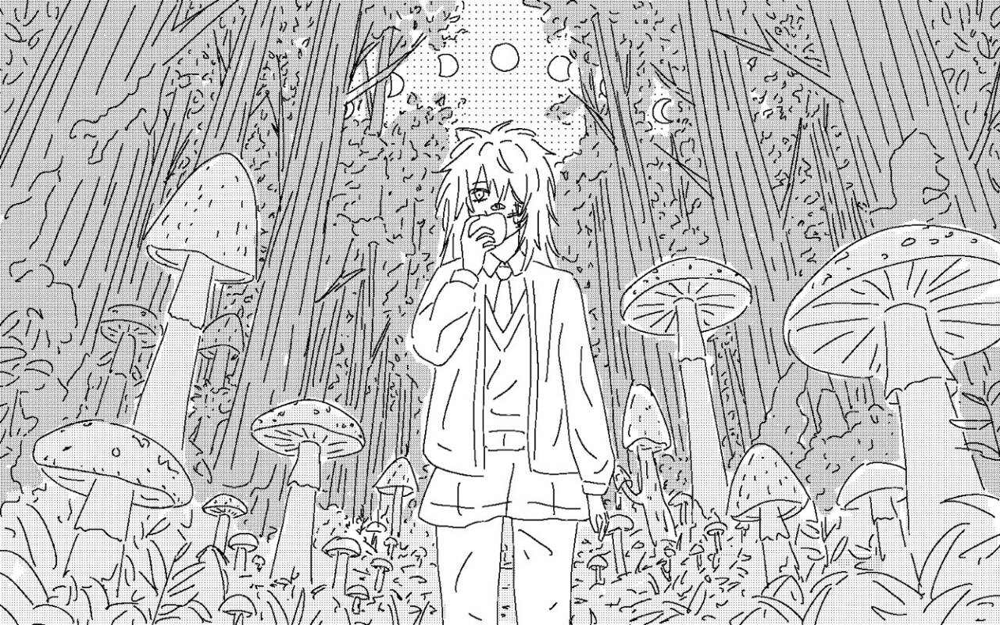

狂气的月光下，菌丝悄然蔓延，少女与哲人经历的微不足道的挫折化作养料，最终繁衍出一片世界末日的绝景……
我们精心挑选自己觉得有意思的独立游戏，撒上养料，目的是带给玩家挥之不去的梦魇……要来跟我们一起召唤世界末日吗？
Under the frantic moonlight, mycelium silently creeps. Whether a commonplace girl or a great philosopher, their most trivial setbacks turn into nourishment, ultimately hatching a sublime spectacle of the apocalypse...
We handpick stylized indie games that catch our eye, pour in our nutrients, and aim to leave you with a lingering, haunting savor. So—will you join us in summoning the end of the world?
我们会挑选那些自己觉得有意思，但没有在简中玩家社群里获得足够曝光的游戏，通过同好会的力量让它走进大众视野里。当然，我们会提供本地化方面的帮助，如果有必要，还会帮忙设计中文logo、解决本地化过程中的技术问题等等。
每破土一朵野菌，主页侧边栏的计数也会更新。你可以点进跳转到页面收获野菌，也可以在异味林地里采摘野菌。
We look for games with a distinctive spark that haven't quite found the spotlight in the Simplified Chinese community, using the collective pulse of our club to bring them into the open. Along the way, we offer dedicated localization support.
Each time a mushroom breaks through the soil, the tracker on our sidebar updates. You can click through to harvest the new growth, or simply roam the cyber glade of The Humid Wilds to forage at your own pace.
野菌计划的游戏会进入合作游戏列表；如果有采访、考据或资讯，会在异味档案里留下文字记录。
我们会在每个季度报告林地野菌的生长情况，报告会用文字和短视频的形式发布。
Titles officially sprouted through this project appear under Supported Games. Interviews and write-ups live in the Archives.
We will share quarterly updates on the growth of the wild mushrooms, published in both text and short video formats.